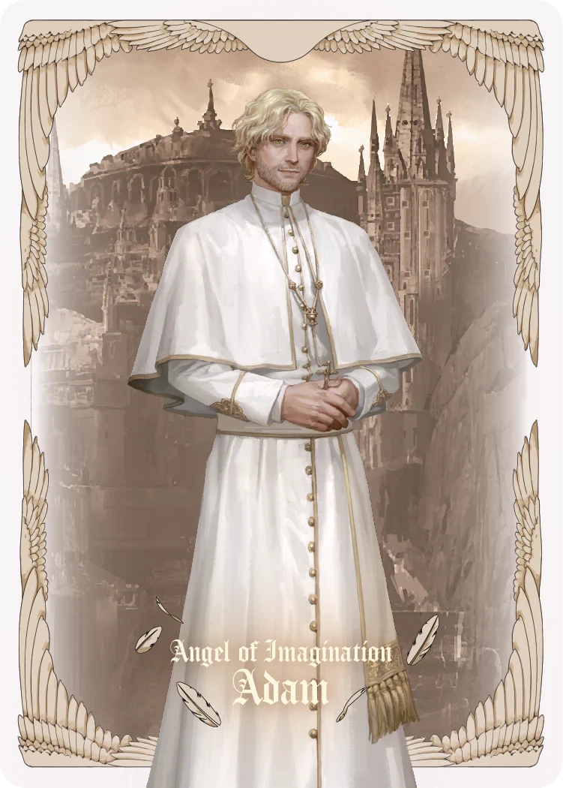

Overview
Other Identities: Ancient Sun God, Adam, True Creator, Sasrir
Can you accept such an outcome?
Adam, Book 1, chapter 1149
Adam, also known as the Angel of Imagination, was one of the Kings of Angels from the Third Epoch and a child of the Ancient Sun God. "He" was born as a Sequence 1 Author with the Uniqueness of the Visionary Pathway.
When "He" first appeared in Book 1, "He" had already accommodated two sequence 1 Beyonder characteristics and the Uniqueness of the Visionary Pathway.1Book 1, chapter 1346
Honorific Name
The Lord that Created Everything; The Omnipotent and Omniscient God; The Lord who Reigns Behind the Curtain of Shadows; The Ruler of the Mind World; The Degenerate Nature of all Living Things (创造一切的主， 全知全能的神， 阴影帷幕后的主宰， 心灵世界的支配者， 所有生灵的堕落自性)
Appearance
"He" usually appears with a simple white cloak, golden hair and beard, and wears a silver cross on "His" neck, just like any ordinary priest. "He" is often described as having pure and innocent eyes like a child.
Background
The Ancient Sun God once said that "He" would be the savior of all life in the distant future.8
"He" is the leader of the Twilight Hermit Order, a secret organization that works from the shadows to revive the Ancient Sun God. However, it is suspected the actual goal is to let Adam complete the advancement ritual of Sequence 0 Visionary.
Divinity and Humanity
The True Creator is the embodiment of the extreme emotions from the Ancient Sun God's death and inherited "His" humanity which drove "Him" into madness.9 4Book 1, chapter 1348 Meanwhile, the Ancient Sun God's divinity awoke inside Adam who has then been actively seeking for "His" complete revival1 while still disguising under the identity of Adam—the Child of the Creator—and continuing to influence the world.1
Since both the True Creator and Adam are a part of the Ancient Sun God, "They" will need to fuse to become complete. "They" have been fighting over who should be the dominant persona ever since "They" both awakened.4
During Klein's Apotheosis Ritual, Adam had partially fused with the True Creator with Adam as the dominant persona. "He" temporarily raised "Himself" to the level of a Half Great Old One to interfere with the ritual. This process was actually rather difficult and risky, and would make "Their" progress a lot slower in the future.10
Grisha Adam
As of Book 2, Adam and the True Creator have fully fused, with Adam becoming the current True Creator.2Book 2, chapter 868 "He" is known as True Creator Adam,3 or Grisha Adam.5
Main article: Adam/History
Trivia
- "His" name is translated as "Angel of Imagination", in Chinese it is "空想天使", "天使" is "Angel" and "空想" is "imagination", but the word "空想" is also used in "空想家" (Visionary).
References
- Book 1, chapter 1346.
- Book 2, chapter 868.
- Book 1, chapter 1348.
- Book 2, chapter 231.
- Book 2, chapter 735.
- Book 1, chapter 1063.
- Book 1, chapter 1260.
- Book 1, chapter 1381.
Source
Article adapted from the Adam article on the Lord of the Mysteries Fandom wiki (CC BY-SA). Chapter numbers follow that article's citation format.
Image gallery
